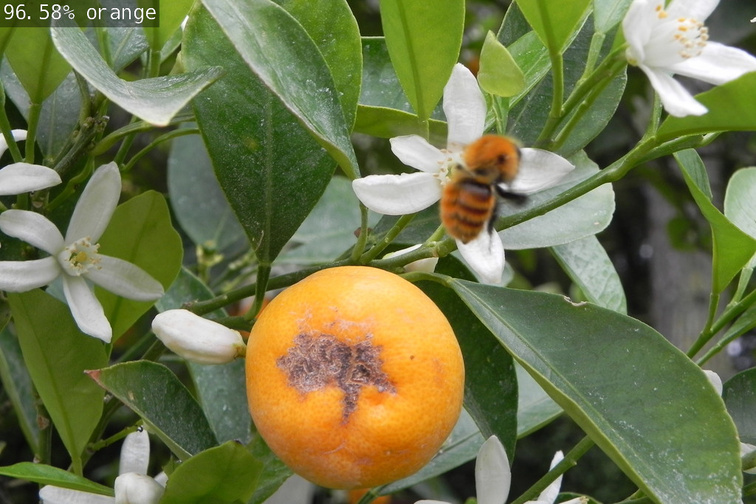
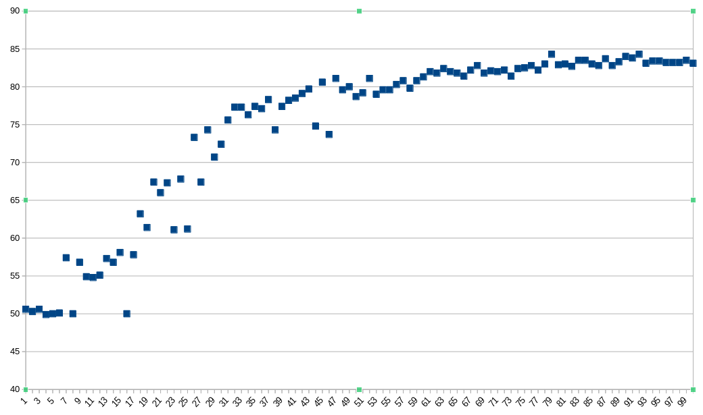

Dockerコンテナの中の/jetson-inference/build/aarch64/binの中にあるimagenetというモジュールについて学ぶ。
予め以下を打っておく。
$ cd /jetson-inference/build/aarch64/binimagenetの使い方は以下
xxxxxxxxxx$ ./imagenet (インプットソース) (アウトプット先)画像を渡すと、それが何であるかをラベリングして画像の左上に表示してアウトプット先に出力する。アウトプット先が画像ファイルだった場合は画像ファイルとして保存される。

インプットソースとして他にもいくつかの画像が入ったディレクトリを渡したり、動画を渡したり、ビデオデバイスを渡したりすることができる。この辺のオプションは以下を参照。
jetson-inference/aux-streaming.md at master · dusty-nv/jetson-inference · GitHub
ライブでカメラ画像を使用する場合は
xxxxxxxxxx$ ./imagenet /dev/video0という感じで、アウトプット先を省略すればウィンドウが表示されてリアルタイムに推測する。
x#!/usr/bin/python3import jetson.inferenceimport jetson.utilsimport argparse# parse the command lineparser = argparse.ArgumentParser()parser.add_argument("filename", type=str, help="filename of the image to process")parser.add_argument("--network", type=str, default="googlenet", help="model to use, can be: googlenet, resnet-18, ect.")args = parser.parse_args()# load an image (into shared CPU/GPU memory)img = jetson.utils.loadImage(args.filename)# load the recognition networknet = jetson.inference.imageNet(args.network)# classify the imageclass_idx, confidence = net.Classify(img)# find the object descriptionclass_desc = net.GetClassDesc(class_idx)# print out the resultprint("image is recognized as '{:s}' (class #{:d}) with {:f}% confidence".format(class_desc, class_idx, confidence * 100))これを書けば良い。ただし、このコードは
ということにしたいので、一旦Dockerコンテナから抜けて、以下を打つ。
xxxxxxxxxx$ cd ~/$ mkdir my-recognition-python$ cd my-recognition-python$ touch my-recognition.py$ chmod +x my-recognition.py$ wget https://github.com/dusty-nv/jetson-inference/raw/master/data/images/black_bear.jpg $ wget https://github.com/dusty-nv/jetson-inference/raw/master/data/images/brown_bear.jpg$ wget https://github.com/dusty-nv/jetson-inference/raw/master/data/images/polar_bear.jpg そして再度Dockerコンテナを起動。
xxxxxxxxxx$ docker/run.sh --volume ~/my-recognition-python:/my-recognition-pythonxxxxxxxxxx#!/usr/bin/python3import jetson.inferenceimport jetson.utilsimport argparseこれらのモジュールは、Dockerコンテナにすでに入っているのはもちろん、ソースからビルドしたときはsudo make installしたときに入っているとのこと。
（この「Hello AI World」というリポジトリはこのモジュールを配布するため？）
xxxxxxxxxx# parse the command lineparser = argparse.ArgumentParser()parser.add_argument("filename", type=str, help="filename of the image to process")parser.add_argument("--network", type=str, default="googlenet", help="model to use, can be: googlenet, resnet-18, ect.")args = parser.parse_args()これにより
args.filename：指定ファイル名（今回は画像）args.network：指定ネットワークモデルとしてユーザーからの入力を取り出せる。
このargparseというライブラリはPython標準のものらしい。詳しくはこちら。
xxxxxxxxxx# load an image (into shared CPU/GPU memory)img = jetson.utils.loadImage(args.filename)ファイル名から画像をロードする。
ロードしたimgの詳細はjetson-inference/imagenet-example-python-2.md at master · dusty-nv/jetson-inference · GitHub
xxxxxxxxxx# load the recognition networknet = jetson.inference.imageNet(args.network)ここでImageNetを、ネットワークモデルを指定しながらロードする。
xxxxxxxxxx# classify the imageclass_idx, confidence = net.Classify(img)# find the object descriptionclass_desc = net.GetClassDesc(class_idx).Classify()メソッドを使えば画像を分類してくれるらしい。
ただし、出力されるのはインデックスとその確率という素っ気ないものなので、そのクラスの説明文を.GetClassDesc()メソッドで取得している。
xxxxxxxxxx# print out the resultprint("image is recognized as '{:s}' (class #{:d}) with {:f}% confidence".format(class_desc, class_idx, confidence * 100))とりあえずここで出力しているけど、実際は得られたclass_idx、confidence、class_descを使って好きなようにすれば良い。
imageNetの詳細https://rawgit.com/dusty-nv/jetson-inference/python/docs/html/python/jetson.inference.html#imageNet
現状では事前に学習されたものしか認識できないので、こちらで指定したものを認識させるようにする。
学習にはPyTorch（またはTensorFlow）を使用し、推論にはTensorRTを使用する。よって、ここからは学習させるためにPyTorchがインストールされていることを確認しておく。（参考）
出力をカスタマイズしようと思ったらデータセットが必要。これは一般的にはラベル付けされた画像を大量に準備するということを意味するけど、このimageNetではラベリングは画像をディレクトリ分けをして、ラベルを列挙したテキストファイルを用意すればいいだけらしい。
例えばクラス分けを以下のとおりとする。
xxxxxxxxxxbackgroundbrontosaurustreetriceratopsvelociraptor
そうするとフォルダ構造は以下。labels.txtの中身は上の5行を記入しておく。
xxxxxxxxxx(任意のディレクトリ名)‣ train/• background/• brontosaurus/• tree/• triceratops/• velociraptor/‣ val/• background/• brontosaurus/• tree/• triceratops/• velociraptor/‣ test/• background/• brontosaurus/• tree/• triceratops/• velociraptor/‣ labels.txt
そしてこれをパッとやってくれるのがcamera-captureというツール。以下のように起動する。（参考）
xxxxxxxxxx$ camera-capture /dev/video0起動後にデータセットディレクトリへのパスとlabels.txtを指定すれば勝手にディレクトリを作ってくれて、後はカメラに写った映像を、写真を撮る様に保存をしていけばよい。
PyTorchを使って学習する。デフォルトではエポック数は35で、データ量にもよるけど数時間かかる。
--epochs=Nでエポック数を指定できる。
xxxxxxxxxx$ cd /jetson-inference/python/training/classification$ python3 train.py --model-dir=(学習モデルの保存先ディレクトリのパス) (データセットディレクトリへのパス)次に、学習したモデルをTensorRT用に変換する。ここではONNXフォーマットを経由する。
xxxxxxxxxx$ python3 onnx_export.py --model-dir=(学習モデルの保存先ディレクトリのパス)これで学習モデルの保存先ディレクトリにresnet18.onnxというファイルができる。TensorRTにはこれを読み込ませて推論させることになる。
ここではResNet-18が出力されるけど、これはtrain.pyの時点でモデルの種類を指定しなかったからデフォルトのResNet-18が採用されて、それをONNXフォーマットに変換しただけ。train.py --arch (モデルの種類)という風に指定をすると別の種類のモデルが作成される。ちなみに別のモデルは事前にダウンロードされていないといけない。（参考）
xxxxxxxxxx$ imagenet.py --model=(学習モデルの保存先ディレクトリのパス)/resnet18.onnx --input_blob=input_0 --output_blob=output_0 --labels=(labels.txtへのパス) (入力ソース)単に使うだけのコマンドと比べると
--model--labelsがポイントらしい。--input_blobと--output_blobはそれぞれ入力レイヤー・出力レイヤーの名前らしい。重要度は不明。省略するとデフォルトでそれぞれ'data'、'prob'と設定されるらしい。
学習モデルの保存先にcheckpoint.pth.tarというものができているけど、これが各エポック終了時に保存される学習モデルらしい。これを指定して学習を再開させると良い。
xxxxxxxxxx$ python3 train.py --model-dir=(学習モデルの保存先ディレクトリのパス) --resume (学習モデルの保存先ディレクトリのパス)/checkpoint.pth.tar --start-epoch (再開させたいエポック)再開させたいエポックという引数の意義は謎。ソースを読んだ限り表示に使ってそう。
再学習後、再度onnx_export.pyを実行してONNXフォーマットに変換するけど、ここで出力されたONNXフォーマットと同じディレクトリに拡張子が.engineというファイルがあったらそれは削除しておかないといけない。どうもTensorRTがONNXフォーマットを読み込んだときに生成するファイルらしくて、.engineファイルがあればそっちを使うようになっているらしい。無ければ再生成するという仕組み。
このことは直接どこかに書いてあったわけじゃないけど、Hello AI WorldのGitHubページのIssueでの作者の返答（参考）や、TensorRTの仕組み（参考）から推測。
以下が考えられる。
学習時のエポック数が足りない
本コースのCat_Dogデータセット（2500枚の画像×2クラス）とResNet-18を使って100エポック回したときの正確さのグラフ。

分類対象が2つしか無いので、50％というのはつまり最低スコア。
こう見るとエポック数が少ないときはばらつきが多く、たまたま回数にそぐわないような好成績を出すこともあるけど、結局のところほぼ動かなくなるぐらいまで回さないと学習が完了したと自信をもっては言えない。
Jetson Nano（2GB）だと「1学習＝半日〜1日仕事」という感じか。
データセットの画像が少ない
よくある比率としては「train：eval＝8：2」ぐらいっぽい。で、このevalにいろいろなパターンの画像を持たせるのがいいっぽい。結果的にどれぐらいのtrainが必要かというのが計算される。
上記のCat_Dog分類でも
train：2500枚×2eval：500枚×2test：100枚×2ということで合計6200枚の画像を使っている。そんなに用意しても認識率は80数％止まり。